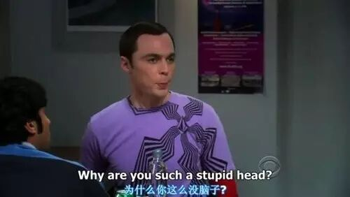
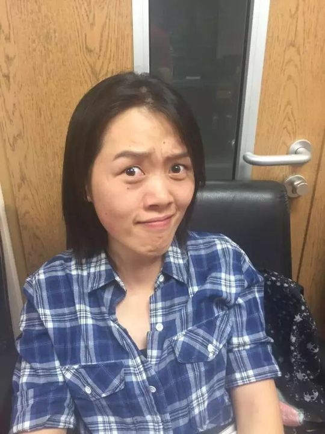

C
Cicily
发音动听、热爱英语的Big Bang女孩，从台下到台上一路绽放的头马新星。
会员活跃 2015–2016出现 12 次 · 11 篇4 场演讲
Cicily 是北航头马里一位发音格外动听、对英语满怀热情的女孩。早在 2015 年深秋的第 117、118 次会议上，她就已活跃在即兴演讲的舞台——和 Crystal 搭档演绎"知心姐姐"的对话，分享自己心中如电影男主一般的 dream lover。那时的她，已经用流利清晰的口语让小编印象深刻。
2016 年春天，她正式开启了自己的备稿之路。第 134 次会议上，"老朋友"Cicily 带来破冰演讲《Here comes Cicily》，向大家郑重介绍自己、分享生命中最重要的三件事；这场首秀惊艳全场，"gorgeous"二字久久萦绕。此后她一路高歌：CC2《Luck and perspiration》延续了她一贯的丰富、流畅与充沛，连导师Joshua都迫不及待要将她收为门徒；CC3 她讲述与黄牛斗智斗勇的爱恨情仇，作为 Big Bang 的头号粉丝，她在屡屡涉及信任的交易里仍选择往好处想；CC4《My passion for English》则袒露她如何爱上这门语言、又为提升英语下过怎样的功夫。
除了演讲台，Cicily 也是俱乐部里靠谱的组织者。她多次担任即兴演讲主持(Table Topics Master)，无论是浪漫的"520"专场还是"Chat Software"主题，她精心准备的问题与流畅的衔接都让现场气氛高涨；她还在第 143 次会议担任 Toastmaster 主持全场，并在同一场会议里又主持又讲 CC，最终拿下当晚的 Best Speaker。从台下的即兴新人，到台上身兼数职的"全能选手"，Cicily 用真诚、用心和对英语的热爱，在北航头马留下了一段明亮的成长轨迹。
里程碑
- 2015-11-09 活跃于即兴演讲 ↗第117次会议与Crystal搭档演绎'知心姐姐'对话，发音清晰动听已获小编称赞。
- 2016-04-22 破冰首秀 ↗第134次会议带来CC1《Here comes Cicily》，惊艳全场，被誉为gorgeous。
- 2016-05-13 首次包揽即兴与备稿Best ↗据137次预告，三周前的会议上她同时拿下table topic与prepared speech的best。
- 2016-07-01 身兼主持与演讲 ↗第143次会议同时担任Toastmaster与CC3讲者，并在备稿环节夺得Best Speaker。
闯关之路 · Competent Communication
✓
CC1
破冰
✓
CC2
组织你的演讲
✓
CC3
明确目标
✓
CC4
怎么说
CC5
肢体在说话
CC6
声音的变化
CC7
研究你的主题
CC8
善用视觉辅助
CC9
以理服人
CC10
激励听众
做过的演讲 · 4 场
破冰演讲，正式向大家介绍自己，分享生命中最重要的三件事，首秀被赞gorgeous。
围绕运气与汗水谈自己对爱迪生名言的不同理解，演讲一如既往丰富、流畅、充沛。
作为Big Bang头号粉丝，讲述与黄牛买票的爱恨情仇；虽屡涉信任问题，仍选择往好处想、信任对方。
分享自己如何爱上英语，以及为提升英语效率所做的努力，展现她对这门语言的强烈热情。
担任过的会议角色
Table Topics Master 即兴主持×2Toastmaster 主持
为俱乐部做的事
- 多次担任即兴演讲主持(Table Topics Master)，为'520''Chat Software'等主题专场精心设计问题、调动现场气氛
- 第143次会议担任全场Toastmaster，主持整场会议流程
- 作为成长迅速的活跃会员，持续完成CC1-CC4备稿演讲，并多次斩获Best Speaker，为新会员树立榜样
- 以动听的英语发音和对英语的热情感染club成员，分享自己提升英语的方法
头马里的人
引荐 / 带过 TA 的
书华同台搭档
Crystal照片墙 · 时间线
共 15 帧，取自 TA 在场的会议。








完整足迹 · 11 次出现（点开，每条可跳转原文）
- 2015-11-09第117次 · 即兴演讲，与Crystal演知心姐姐情景
- 2015-11-17第118次 · 即兴演讲，分享理想中的dream lover
- 2016-04-21第134次 · 做CC1首演自我介绍《Here comes Cicily!》
- 2016-05-12第137次 · 预告CC2演讲《Luck and perspiration》
- 2016-05-17第137次 · 做CC2演讲《luck and perspiration》
- 2016-05-19第138次 · 担任即兴演讲主持
- 2016-05-20第138次 · 担任即兴演讲主持，准备表白话题
- 2016-05-24第138次 · 担任即兴演讲主持，认真准备话题
- 2016-07-01第143次 · 做CC3演讲与黄牛交易经历
- 2016-07-04第143次 · 任Toastmaster并做CC,获备稿best speaker
- 2016-07-15第145次 · 做CC4演讲My passion for English
“My passion for English”